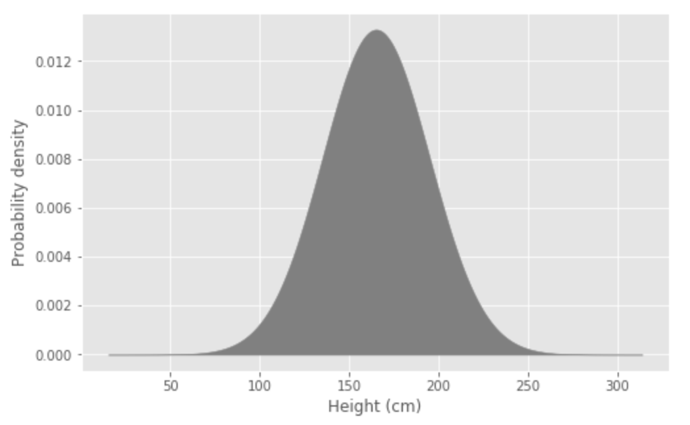
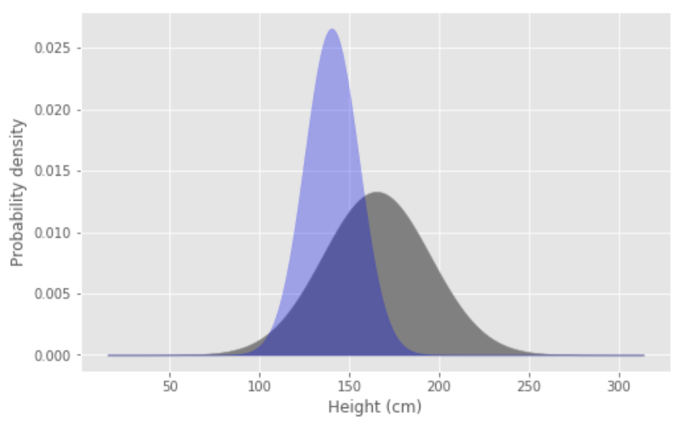
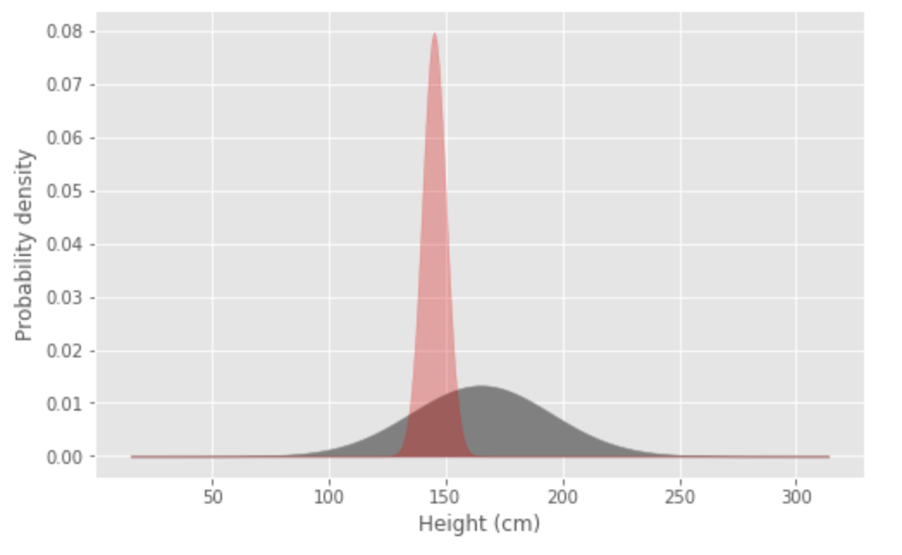

BAIT 509: Business Applications of Machine Learning¶
Lecture 6 - Model and feature selection¶
Tomas Beuzen, 22th January 2020
Lecture outline¶
Announcements¶
Assignment 2 has been released and will be due next Monday (27th Jan) at 11:59pm.
0. Recap (5 mins) ¶
Logistic regression
Naive Bayes
1. Lecture learning objectives ¶
Feature selection: how to select features that are important for your models
Model selection: how to choose the best model for your problem
2. Feature and model selection (5 mins) ¶
In supervised learning, we generally seek a model that gives us the lowest generalization error possible. This involves two aspects:
Reducing the irreducible error
Reducing the reducible error
Reducing irreducible error¶
Recall that irreducible error is related to our data
We can’t measure everything about a system, and all those things we don’t measure contribute to irreducible error
To reduce irreducible error we can use feature selection
This is about finding and choosing features (data) that gives us as much information about the response as we can get
Recall our example of predicting a persons height
Predicting height with no other information: 
{kind=link}
Predicting height knowing that sex=female: 
{kind=link}
Predicting height knowing that sex=female & weight=65kg: 
{kind=link}
Reducing reducible error (bias & variance)¶
Recall that reducible error is related to the model we are using to relate our features and response
We want to extract the maximum amount of information that the features hold about the response
We can do this by model selection (choosing a good model) and hyperparameter optimization (tuning)
Recall that reducible error can be decomposed into bias and variance
{kind=link}
3. Feature selection (30 mins) ¶
Feature selection is about choosing the best set of features for modelling our response
You can think of feature selection as a hyperparameter
Importantly feature selection should only be done using the training data! (just like hyperparameter tuning)
Unfortunately, we can’t just throw lots and lots of features at the problem
Recall that, when tuning a supervised learning method (such as choosing
max_depthin a decision tree), we can make the training error arbitrarily small (even 0) – but this results in overfitting the training data. The same thing generally applies to the number of features you add - the more features, the more likely you are to overfit.Furthermore, more features:
add computational cost
can disrupt the interpretability of your model,
require you to collect more data to actually use your model
So we generally want to select as few features as possible whilst maximising our model performance (Occam’s razor)
There are two main kinds of feature selection we’ll focus on here:
Univariate feature selection
Wrapper feature selection
3.1 Univariate feature selection¶
3.1.1 Categorical data¶
Univariate feature selection is the simplest feature selection method
It works by selecting features based on a univariate statistical metric/test
For example:
Pearson correlation ($r^2$): numeric data
Chi-squared ($\chi^2$): categorical data
Mutual information: mixed data
etc
The sklearn function
SelectKBestis provided for simple univariate feature selectionIt allows us to select the
k“best” features based on a particular metricTo demonstrate the method, we will revisit the twitter dataset from last lecture of airline tweets and their sentiments (positive or negative)
# import required packages
import numpy as np
import pandas as pd
from sklearn.naive_bayes import MultinomialNB
from sklearn.model_selection import train_test_split, cross_validate
from sklearn.feature_extraction.text import CountVectorizer
from sklearn.feature_selection import SelectKBest, chi2
Load in the twitter data
Split into train/test sets
df = pd.read_csv('data/twitter-airline-sentiment.csv')
cv = CountVectorizer(stop_words='english')
X = cv.fit_transform(df['tweet'])
y = df['sentiment']
X_train, X_test, y_train, y_test = train_test_split(X,
y,
test_size=0.2,
random_state=123)
I’m going to use Naive Bayes to model my dataset
There’s no hyperparameter tuning here, but I will be making a decision about which features to keep in my model, so I can’t use my test data to help me make those decision
Instead I need to use cross-validation to get an estimate of model performance
model = MultinomialNB()
cv_score = cross_validate(model, X_train, y_train, cv=10)
print(f" Mean error rate = {1 - cv_score['test_score'].mean():.2f}")
Mean error rate = 0.11
So I get a pretty low error-rate which is great
But now I’m going to do some feature selection using
SelectKBestThis function works similar to the preprocessing functions we’ve seen previously
It has a
.fit()and.transform()There are just 2 arguments:
The scoring function (chi2 for classification)
The number of features to keep
selector = SelectKBest(chi2, k=20)
selector.fit(X_train, y_train)
SelectKBest(k=20, score_func=<function chi2 at 0x12a7618b0>)
Before we transform our data, let’s remind ourselves how many features there were originally
There were 12,364 features. That’s quite a lot!
X_train.shape
(9232, 12364)
Now let’s transform our data and pick only the best 20 features
X_train_new = selector.transform(X_train)
X_train_new.shape
(9232, 20)
And now use this subset of data to train a new model and do cross-validation again
cv_score = cross_validate(model, X_train, y_train, cv=10)
print(f" Mean error rate = {1 - cv_score['test_score'].mean():.2f}")
Mean error rate = 0.11
We have very similar error but by using a much simpler model, only 20 features versus 12,364!!!
Let’s have a look at what those features are to see if they make sense
The best features are revealed by the
get_supportmethod of our selector, and their scores are in theselector.scores_attributeIt’s a little convoluted to access them, so take your time to understand the code below, which extracts this information and stores it in a nice neat dataframe
best_features = selector.get_support(indices=True)
pd.DataFrame({'feature': np.array(cv.get_feature_names())[best_features],
'score': selector.scores_[best_features]}).sort_values(by='score', ascending=False)
| feature | score | |
|---|---|---|
| 16 | thank | 1044.243959 |
| 17 | thanks | 938.900996 |
| 8 | great | 451.583250 |
| 13 | love | 230.509507 |
| 2 | awesome | 223.013462 |
| 11 | jetblue | 183.832946 |
| 0 | amazing | 182.531895 |
| 6 | flight | 136.000069 |
| 3 | best | 135.021187 |
| 18 | usairways | 131.826308 |
| 15 | southwestair | 124.393423 |
| 10 | hours | 122.566715 |
| 4 | cancelled | 118.922146 |
| 9 | hold | 115.491527 |
| 19 | virginamerica | 102.930274 |
| 5 | delayed | 79.992183 |
| 14 | rock | 77.444498 |
| 1 | appreciate | 74.970037 |
| 7 | good | 70.778108 |
| 12 | kudos | 68.375200 |
3.1.2 Numeric data¶
With regression problems, feature selection is often based on Pearson correlation
This can be done in sklearn using the
f_regressionfunctionsBut often people will just do it manually
I’m going to read in some data describing diabetes patients (the data is available on scikit-learn here)
It contains 10 numeric features of patient physiology and 1 target which is a continuous measure of disease progression
df = pd.read_csv('data/diabetes.csv')
df.head()
| age | sex | bmi | bp | s1 | s2 | s3 | s4 | s5 | s6 | disease | |
|---|---|---|---|---|---|---|---|---|---|---|---|
| 0 | 0.038076 | 0.050680 | 0.061696 | 0.021872 | -0.044223 | -0.034821 | -0.043401 | -0.002592 | 0.019908 | -0.017646 | 151 |
| 1 | -0.001882 | -0.044642 | -0.051474 | -0.026328 | -0.008449 | -0.019163 | 0.074412 | -0.039493 | -0.068330 | -0.092204 | 75 |
| 2 | 0.085299 | 0.050680 | 0.044451 | -0.005671 | -0.045599 | -0.034194 | -0.032356 | -0.002592 | 0.002864 | -0.025930 | 141 |
| 3 | -0.089063 | -0.044642 | -0.011595 | -0.036656 | 0.012191 | 0.024991 | -0.036038 | 0.034309 | 0.022692 | -0.009362 | 206 |
| 4 | 0.005383 | -0.044642 | -0.036385 | 0.021872 | 0.003935 | 0.015596 | 0.008142 | -0.002592 | -0.031991 | -0.046641 | 135 |
We can use the built-in Pandas function
.corr()to calculate Pearson correlationWe are interested in which features have the highest/lowest correlation with the target
df.corr()
| age | sex | bmi | bp | s1 | s2 | s3 | s4 | s5 | s6 | disease | |
|---|---|---|---|---|---|---|---|---|---|---|---|
| age | 1.000000 | 0.173737 | 0.185085 | 0.335427 | 0.260061 | 0.219243 | -0.075181 | 0.203841 | 0.270777 | 0.301731 | 0.187889 |
| sex | 0.173737 | 1.000000 | 0.088161 | 0.241013 | 0.035277 | 0.142637 | -0.379090 | 0.332115 | 0.149918 | 0.208133 | 0.043062 |
| bmi | 0.185085 | 0.088161 | 1.000000 | 0.395415 | 0.249777 | 0.261170 | -0.366811 | 0.413807 | 0.446159 | 0.388680 | 0.586450 |
| bp | 0.335427 | 0.241013 | 0.395415 | 1.000000 | 0.242470 | 0.185558 | -0.178761 | 0.257653 | 0.393478 | 0.390429 | 0.441484 |
| s1 | 0.260061 | 0.035277 | 0.249777 | 0.242470 | 1.000000 | 0.896663 | 0.051519 | 0.542207 | 0.515501 | 0.325717 | 0.212022 |
| s2 | 0.219243 | 0.142637 | 0.261170 | 0.185558 | 0.896663 | 1.000000 | -0.196455 | 0.659817 | 0.318353 | 0.290600 | 0.174054 |
| s3 | -0.075181 | -0.379090 | -0.366811 | -0.178761 | 0.051519 | -0.196455 | 1.000000 | -0.738493 | -0.398577 | -0.273697 | -0.394789 |
| s4 | 0.203841 | 0.332115 | 0.413807 | 0.257653 | 0.542207 | 0.659817 | -0.738493 | 1.000000 | 0.617857 | 0.417212 | 0.430453 |
| s5 | 0.270777 | 0.149918 | 0.446159 | 0.393478 | 0.515501 | 0.318353 | -0.398577 | 0.617857 | 1.000000 | 0.464670 | 0.565883 |
| s6 | 0.301731 | 0.208133 | 0.388680 | 0.390429 | 0.325717 | 0.290600 | -0.273697 | 0.417212 | 0.464670 | 1.000000 | 0.382483 |
| disease | 0.187889 | 0.043062 | 0.586450 | 0.441484 | 0.212022 | 0.174054 | -0.394789 | 0.430453 | 0.565883 | 0.382483 | 1.000000 |
It’s kind of difficult to look at all those numbers
A more visually-friendly way of doing this is using the plotting package seaborn
import matplotlib.pyplot as plt
import seaborn as sns
plt.subplots(1, 1, figsize=(8, 6))
sns.heatmap(df.corr(),
cmap='RdBu_r', vmin=-1, vmax=1)
plt.ylim(0, 10)
(0.0, 10.0)
Things to look for:
Features with low correlation with the response (these could be dropped)
Features with high correlation with the response (these should be kept and may be important)
Features with high correlation with each other (could drop one of these as they are contributing redundant information to the response)
For the plot above I might:
drop the
sexfeature (it has ~0 correlation)drop
s2(it has high correlation withs1)drop
s4because it is highly correlated withs1,s3, ands5
Often people will try dropping/keeping different features in the training data set and see how it affects the cross-validation score
3.2 Wrapper feature selection¶
Wrapper feature selection uses the model itself to evaluate the best subset of features
It is more computationally expensive than univariate selection, but can give better results because we are using the model itself to help us pick features
There are two main kinds of wrapper selection:
Exhaustive
Greedy
3.2.1 Exhaustive wrapper selection¶
This involves testing every single combination of input features
Guaranteed to give you the global optimum solution for your setup, but computational expensive
If we have $d$ features, there are approximately $2^d$ subsets of those features to consider/models to build
For 10 features, that’s 1000 models. For 20 features, that’s over 1,000,000 models
Here’s how the number of models scales with the numer of features:
{kind=link}
This functionality is not even built into sklearn at the moment because it’s rarely used
However, there is a package called mlxtend which facilitates wrapper selection
3.2.2 Greedy wrapper selection¶
Instead of fitting all models, we can take a “greedy approach”. This may not result in the optimal model, but the hope is that we get close. One of three methods are typically used:
1. Forward Selection¶
The idea here is to start with the null model: no features.
Then, add one predictor at a time, each time choosing the best one in terms of error reduction.
Sometimes, a hypothesis test (e.g., F-test) is used to determine whether the addition of the predictor is significant enough.
Usually we define a threshold that we want the error to decrease by if we add a feature. If we can’t exceed this threshold by adding any other feature, we stop.
2. Backward Selection¶
The idea here is opposite to Forward Selection, we start with the full model: all features.
Then, we step-wise remove feature based on their effect on error, or based on a hypothesis test.
Once again, we usually define a threshold to help us stop the algorithm.
3. Stepwise Selection¶
This is a combination of forward and backward selection.
At each step we consider both adding or removing features.
There is a pull request on GitHub to make this functionality available in sklearn but currently it is not
They are included in the mlxtend package though
sklearn does have something similar called Recursive Feature Selection. This is similar to the above, except that instead of choosing features based on model error, it chooses features based on their
feature importance. As a result, it can only be used with models that have afeature importanceattribute, e.g., Decision trees, Logistic regression, Naive Bayes, Random Forest, etc.
3.3 Other feature selection topics¶
Regularization = adding a penalty into your optimization function which can reduce/”shrink” the value of unimportant features to 0 (e.g., Ridge regression, Lasso regression).
Dimensionality reduction = try to represent information in multiple features using fewer contrived features (e.g., Principal Component Analysis)
Feature engineering = creating new features based on expert knowledge or systematic analysis, this video does a decent job at explaining it (it’s specifically in regards to TensorFlow, another ML library, but the concepts are the same)
——– Break (10 mins) ——– ¶
4. Model Selection (10 mins) ¶
The question here is, what supervised learning method should you use? Usually we develop multiple different models and then need to choose one. There are a few things you should consider.
Quantitative choice¶
This is about choosing the best model for your problem
Suppose you’ve gone ahead and fit your best decision tree model, kNN model, logistic regression model, etc. Which do you choose?
You should have estimated the generalization error for each model (for example, using cross-validation) – so choose the one that gives the lowest error.
You might find that some models have roughly the same validation error. In this case, you have a few options:
Choose a model based on other criteria (discussed below)
Choose the simplest model (least risk of being overfit)
Use all the model to make predictions of new data (i.e., an ensemble - more to come in a later lecture)
Qualitative choice¶
This could also be called “expert choice”
It’s about adding assumptions to the modelling process based on your expert opinion
Say that, after exploring the data you think that your response looks linear in your features. If so, it may be reasonable to assume linearity, and fit a linear regression model.
Interpretability/other contraints¶
Sometimes your choice of model is based on considerations other than just error
For example, you (or your client) might want an interpretable model, like a Decision Tree or Logistic Regression
You might want a model that predicts in real-time, in which case you need something fast and light-weight
5. Advanced hyperparameter optimization (20 mins) ¶
Hyperparameter optimization is also about reducing the reducible error
It is to do with how well our model generalizes our data
We’ve already done quite a bit of hyperparameter optimization manually, by changing the values of a hyperparameter, doing cross-validation, checking the error, and repeating
But I now want to introduce you to a more efficient way to tune one or more hyperparameters
5.1 sklearn’s GridSearchCV¶
sklearn provides the function GridSearchCV to help optimise model hyperparameters
This method does exactly the process described above, but all wrapped up in one nice convenient function
It’s best illustrated by example
We will use our good-old cities dataset to demonstrate
GridSearchCVLet’s load up the data
df = pd.read_csv('data/cities_USA.csv', index_col=0)
X = df.drop(columns=['vote'])
y = df[['vote']]
X_train, X_test, y_train, y_test = train_test_split(X,
y,
test_size=0.2,
random_state=123)
Let’s import the
GridSearchCVlibrary along with aDecisionTreeClassifier
from sklearn.model_selection import GridSearchCV
from sklearn.tree import DecisionTreeClassifier
The first part of a
GridSearchCVworkflow is to define the hyperparameters you want to testYou do this in a dictionary which we will call “hyperparams”
hyperparams = {'max_depth': [1, 3, 5, 10]}
We then treat the
GridSearchCVobject just like any other model in sklearnExcept that we pass in as arguments, our model and our hyperparameters
I’m also specifying here
cv=10to ensure my grid search tests each hyperparameter using 10-fold cross-validation
model = DecisionTreeClassifier()
model_grid = GridSearchCV(model, hyperparams, cv=10)
We can now fit our model using our training data
In the fit stage, our grid search is testing every single hyperparameter combination using cross-validation
model_grid.fit(X_train, y_train)
GridSearchCV(cv=10, estimator=DecisionTreeClassifier(),
param_grid={'max_depth': [1, 3, 5, 10]})
We can now access the results of our grid search by exploring its attributes
The best hyperparameter combination can be found in the
best_params_attributeThe best cross-validation score (associated with the best hyperparameter) can be accessed using
best_score_
print(f"Best hyperparameter: {model_grid.best_params_}")
print(f"Best score: {1 - model_grid.best_score_:.2f}")
Best hyperparameter: {'max_depth': 10}
Best score: 0.11
If we use our
model_gridto get a score on our test data, it will automatically use the best hyperparameter combination
print(f"Error on test data: {1- model_grid.score(X_test, y_test):.2f}")
Error on test data: 0.12
Of course, the real utility here is that we can test multiple hyperparameters at the same time like in the code below
hyperparams = {'max_depth': [1, 3, 5, 10],
'criterion': ['gini', 'entropy'],
'min_samples_leaf': [2, 4]}
model = DecisionTreeClassifier()
model_grid = GridSearchCV(model, hyperparams, cv=10, iid=False)
model_grid.fit(X_train, y_train)
print(f"Best hyperparameters: {model_grid.best_params_}")
print(f"Best score: {1 - model_grid.best_score_:.2f}")
Best hyperparameters: {'criterion': 'entropy', 'max_depth': 10, 'min_samples_leaf': 2}
Best score: 0.09
/usr/local/lib/python3.8/site-packages/sklearn/model_selection/_search.py:847: FutureWarning: The parameter 'iid' is deprecated in 0.22 and will be removed in 0.24.
warnings.warn(
print(f"Error on test data: {1 - model_grid.score(X_test, y_test):.2f}")
Error on test data: 0.04
5.2 sklearn’s RandomizedSearchCV¶
The problem with GridSearchCV is that, if we have many hyperparameters to tune, it can be computationally expensive
For example, if we want to tune 3 different hyperparameters, and we are trying 10 different values of each one then we have:
10^3 possible combinations of hyperparameters
We usually evaluate each combination using 10-fold cross-validation
Which means that we are calling
.fit()/.predict()10^4 times
sklearn provides the function RandomizedSearchCV as an alternative to GridSearchCV
In contrast to GridSearchCV, not all hyperparameter combinations are evaluated
Instead, only a fixed number of hyperparameter combinations is randomly sampled from the set provided
This is commonly used in practice for hyperparam optimization
6. Class Exercise: feature and model selection (20 mins) ¶
In this class exercise we will practice doing feature and model selection on the airline tweets dataset we’ve seen a few times already.
Your tasks:
Load the data and vectorize it using the
CountVectorizerfunction.Split the data into 2 parts: 80% training, 20% testing.
Use the
SelectKBestfunction with achi2metric to select the best 30 features from the dataset;Now, using
GridSearchCVfor parameter tuning and 5-fold cross-validation, develop four optimum models:KNNClassifier
DecisionTreeClassifier
LogisitcRegression
MultinomialNaiveBayes
Select your best model and test it on the your test data.
import numpy as np
import pandas as pd
from sklearn.neighbors import KNeighborsClassifier
from sklearn.tree import DecisionTreeClassifier
from sklearn.linear_model import LogisticRegression
from sklearn.naive_bayes import MultinomialNB
from sklearn.feature_extraction.text import CountVectorizer
from sklearn.model_selection import train_test_split, GridSearchCV
from sklearn.feature_selection import SelectKBest, chi2
import warnings
from sklearn.exceptions import DataConversionWarning
warnings.filterwarnings(action='ignore', category=DataConversionWarning)
from sklearn.ensemble import VotingClassifier
# Question 1 and 2
df = pd.read_csv('data/twitter-airline-sentiment.csv')
cv = CountVectorizer(stop_words='english')
X = cv.fit_transform(df['tweet'])
y = df['sentiment']
X_train, X_test, y_train, y_test = train_test_split(X,
y,
test_size=0.2,
random_state=0)
# Question 3
selector = SelectKBest(chi2, k=30)
X_train_30 = selector.fit_transform(X_train, y_train)
X_test_30 = selector.transform(X_test)
# Question 4
# I will first define a dictionary of the different models I want to test
models = {
'KNN': GridSearchCV(KNeighborsClassifier(),
param_grid = {'n_neighbors': np.arange(1, 20, 2)},
cv=5),
'DT': GridSearchCV(DecisionTreeClassifier(),
param_grid = {'max_depth': np.arange(1, 20, 2)},
cv=5),
'LR': GridSearchCV(LogisticRegression(solver='lbfgs'),
param_grid = {'C': [0.01, 0.1, 1.0]},
cv=5),
'NB': GridSearchCV(MultinomialNB(),
param_grid = {'alpha': [0.01, 0.1, 1, 10]},
cv=5)}
# I will now loop over each model in my dictionary and find the score
print("*** Hyperparameter tuning ***")
for name, model in models.items():
model.fit(X_train_30, y_train)
print(f"{name} best hyperparams = {model.best_params_}.")
print(f"{name} error: {1 - model.best_score_:.2f}")
# Question 5
# Naive Bayes is the best model (although they are all similar)
print("")
print("*** Best model ***")
best_model = MultinomialNB(alpha=0.01).fit(X_train_30, y_train)
print(f"Error on test data: {1 - best_model.score(X_test_30, y_test):.2f}")
# Bonus material
# All our classifiers did well so why not use all of them to make predictions?
# We can do this with the VotingClassifier (which we'll learn about in a later lecture)
# Turns out that this ensemble approach doesn't really do much better than our single Naive Bayes model
print("")
print("*** Voting classifier ***")
voter = VotingClassifier(estimators=[('KNN', KNeighborsClassifier(n_neighbors=7)),
('DT', DecisionTreeClassifier(max_depth=15)),
('LR', LogisticRegression(solver='lbfgs', C=1)),
('NB', MultinomialNB(alpha=0.01))],
voting='soft')
voter.fit(X_train_30, y_train)
print(f"Error on test data: {1 - voter.score(X_test_30, y_test):.2f}")
*** Hyperparameter tuning ***
KNN best hyperparams = {'n_neighbors': 7}.
KNN error: 0.13
DT best hyperparams = {'max_depth': 15}.
DT error: 0.13
LR best hyperparams = {'C': 1.0}.
LR error: 0.12
NB best hyperparams = {'alpha': 0.01}.
NB error: 0.12
*** Best model ***
Error on test data: 0.12
*** Voting classifier ***
Error on test data: 0.11
7. Summary questions to ponder ¶
How can we start forming good business questions that can be addressed with Machine Learning
Is there any easier way to group our models, preprocessing, feature selection, etc into one workflow?